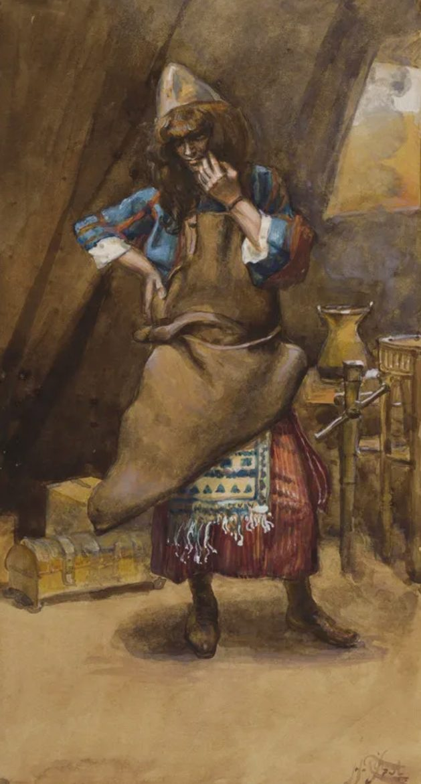

Éxodo 35 — La Traducción Mister

⚠ Tissot pinta a Bezalel no recibiendo instrucciones ni posando para un retrato, sino a mitad de evaluación —dando vueltas a un trozo de piel o cuero entre las manos, calculando cómo cortarlo. Nada en la escena anuncia «artesano principal del tabernáculo»; es simplemente un hombre haciendo el trabajo específico y poco glamoroso de entender el material, exactamente la clase de habilidad en la que este capítulo insiste durante seis versículos que Bezalel fue llenado divinamente (vv30–35): sabiduría, inteligencia, y conocimiento en TODA clase de artesanía, no un solo don dramático sino una aptitud para el cuero y la madera y el oro y la piedra por igual.
El desorden del taller detrás de él —el soporte de madera, el cofre que espera, el gran recipiente— se lee como mobiliario ordinario de tienda en vez de equipo sagrado, un recordatorio de que antes de que nada de esto se volviera santo por su uso, el tabernáculo se construyó como se construye cualquier cosa: por alguien que conocía el material en sus manos.
{kind=link}
El sábado, dicho primero esta vez
Cada entrega anterior de las instrucciones del tabernáculo cerraba con el mandamiento del sábado, casi como una idea tardía después de la construcción misma (Éxodo 31:12–17, ya en estas páginas). Aquí, cuando la construcción real por fin comienza, Moisés invierte el orden y lo pone primero. Nada se construye hasta que se asienta el día en que nada se construye.
⚠ «No encenderéis fuego en ninguna de vuestras moradas en el día del sábado» (v3) es un detalle genuinamente nuevo —la primera vez que alguna versión de la ley sabática nombra un acto específico prohibido. Cada declaración anterior (Éxodo 20:8–11; 23:12; 31:12–17, todas ya en estas páginas) ordena el descanso en términos generales; esta es la primera vez que el texto se vuelve concreto sobre qué cuenta como trabajo. El ejemplo único se volvió desproporcionadamente influyente: la ley rabínica posterior construyó mucha de sus restricciones sabáticas detalladas razonando hacia afuera desde este único acto nombrado, y siglos después se volvería una línea de fractura real entre el judaísmo rabínico y el caraíta sobre si un fuego encendido antes del atardecer podía dejarse ardiendo durante el propio sábado.
Una lista recitada dos veces, ahora por fin a punto de construirse
La lista de materiales y el inventario de mobiliario del tabernáculo que llenan el resto de esta sección (vv5–19) son casi una recitación palabra por palabra de la apertura de toda la instrucción, siete capítulos atrás (Éxodo 25:1–9, ya en estas páginas). Nada aquí es información nueva; Moisés no está añadiendo a lo que Jehová mandó en el monte, la está repitiendo al pueblo que no estaba allí para oírla la primera vez —la brecha entre la revelación y su ejecución por fin cerrada.
El inventario detallado que sigue —tabernáculo, arca, mesa, candelabro, altar del incienso, altar del holocausto, atrio, vestiduras sacerdotales— coincide con la secuencia exacta de los capítulos 25 al 31, en orden. Este capítulo es, en efecto, una tabla de contenidos de todo lo que está a punto de suceder en los seis capítulos que aún quedan por delante.
El mismo oro, devuelto
«Trajeron narigueras, y zarcillos, y anillos de sello, y brazaletes, todo artículo de oro» (v22) es la misma palabra, nezem, «anillo», que nombró exactamente lo que Aarón exigió tres capítulos atrás —«apartad los zarcillos de oro que están en las orejas de vuestras mujeres, de vuestros hijos, y de vuestras hijas» (Éxodo 32:2, ya en estas páginas). La misma joyería, arrancada una vez bajo presión para construir un ídolo, ahora se entrega libremente para construir un santuario. Nada obliga esta ofrenda; el texto se esfuerza por decir lo contrario —«todo aquel a quien su corazón impulsó» (v21), repetido como «cuantos fueron de corazón generoso» (v22) y otra vez como «ofrenda voluntaria» (v29). El becerro de oro fue Israel tomando oro de Dios sin que se lo pidieran; esto es Israel dando oro a Dios sin que se lo pidan dos veces.
⚠ Las mujeres son nombradas explícita y separadamente como artesanas hábiles: «todas las mujeres sabias de corazón hilaron con sus manos» (v25), y de nuevo, «todas las mujeres cuyo corazón las impulsó con sabiduría hilaron el pelo de cabra» (v26). La frase «sabio de corazón» (chakham-lev) es la misma calificación que el texto usa para los artesanos hábiles comisionados en Éxodo 28:3, ya en estas páginas, y para «todo hombre sabio de corazón» llamado a construir en el v10 anterior —la misma palabra para la habilidad aplicada sin distinción a hombres y mujeres.
La promesa de antes del becerro de oro, repetida palabra por palabra
La presentación que Moisés hace de Bezalel y Aholiab (vv30–35) repite, casi palabra por palabra, las propias palabras de Jehová nombrándolos en el monte, antes de que ocurriera toda la crisis de este libro (Éxodo 31:2–6, ya en estas páginas). El becerro de oro, las tablas quebradas, el ruego por ver la gloria de Dios, el pacto rehecho —cuatro capítulos de ruptura y reparación se interponen entre la promesa y su repetición, y cuando el texto por fin regresa a ella, nada de la promesa misma ha cambiado. Bezalel fue nombrado antes de la crisis y es comisionado después de ella con las mismas palabras, como si la interrupción no hubiera dejado marca en lo que Dios pretendía construir.
Notas sobre esta traducción
Decisiones. «Sabio de corazón» mantenido para chakham-lev (v10, 25, 30 [como «sabiduría de corazón» en su forma sustantiva en v35]), igualando la propia elección anterior de esta traducción en Éxodo 28:3 y 31:6. «Narigueras, zarcillos, anillos de sello, y brazaletes» sigue la línea de la ASV/NASB para los cuatro términos disputados de joyería del v22 —véase la nota anterior para la verdadera bifurcación en el estante en inglés. «Tachash» mantenido transliterado en vez de adivinado (vv7, 23), igualando la propia elección anterior de esta traducción en Éxodo 25:5. Los dos espacios de párrafo del capítulo ({פ} en v3, {פ} en v29) marcan la costura entre el mandamiento del sábado y el llamado a los materiales, y entre las ofrendas del pueblo y la comisión de Bezalel; v35 cierra con el propio {ס} de la Torá. La numeración de versículos sigue exactamente el hebreo; el hebreo y el español de Éxodo 35 corren igual, 1–35.
Una nota sobre el orden: Éxodo está en estas páginas en los capítulos 1–40 —el pacto rehecho, y ahora el pueblo mismo responde: el sábado declarado primero, una ofrenda voluntaria del mismo oro alguna vez arrancado para el becerro, y Bezalel y Aholiab comisionados exactamente como se prometió antes de la crisis. Éxodo 36, los artesanos en su labor y la generosidad del pueblo por fin contenida, y Éxodo 37, el arca y la mesa y el candelabro por fin construidos, y Éxodo 38, el altar de bronce y el atrio construidos por fin, y Éxodo 39, las vestiduras sacerdotales por fin cosidas, ya están en estas páginas también. Éxodo 40 —el tabernáculo levantado y la gloria de Jehová llenándolo, el último capítulo del propio libro— ya está también en estas páginas. Éxodo queda completo aquí, los cuarenta capítulos; la historia continúa en Levítico, ya comenzado en estas páginas.